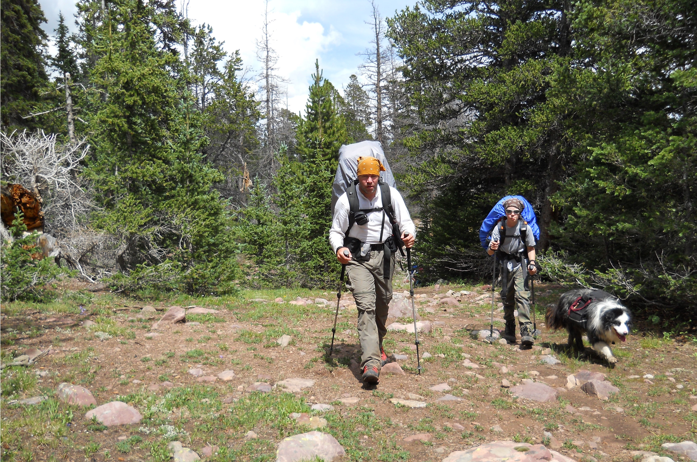
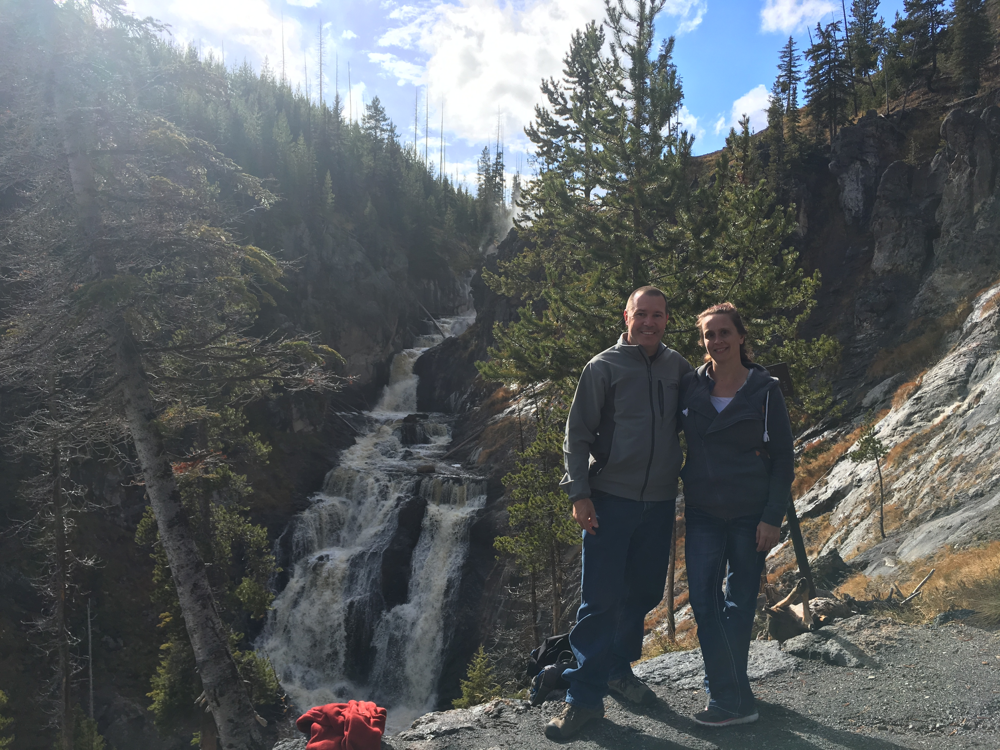
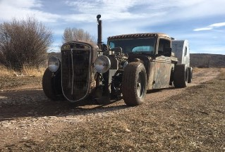

Thanks for taking an interest in me and my channel. My love for the outdoors began at a young age. I grew up always playing outside, and eventually joined the Boy Scouts. By the time I hit high school, I was hiking, and exploring regularly. I started repelling, which led to rock climbing, which led to mountaineering. I have rock climbed in California at Joshua Tree National Park, Sespe Gorge, Malibu Creek State Park, and many Unnamed crags. When I moved to Wyoming I climbed in the Unitas, usually at Ruth Lake, also in the Big and Little Cottonwood Canyons in Utah. I have also climbed and gone mountaineering in the Tetons.
Thanks for taking an interest in me and my channel. My love for the outdoors began at a young age. I grew up always playing outside, and eventually joined the Boy Scouts. By the time I hit high school, I was hiking, and exploring regularly. I started repelling, which led to rock climbing, which led to mountaineering. I have rock climbed in California at Joshua Tree National Park, Sespe Gorge, Malibu Creek State Park, and many Unnamed crags. When I moved to Wyoming I climbed in the Unitas, usually at Ruth Lake, also in the Big and Little Cottonwood Canyons in Utah. I have also climbed and gone mountaineering in the Tetons.
Nowadays I do most of my outdoor adventures in the Unitas, mostly because of the close proximity to my house. I have made many summits in the Uintas, including several winter ascents. I have hiked, and backpacked in most of the drainages of the Uintas, and backpacked the high line trail (86 miles) twice.
I enjoy hiking, backing, horse packing, goat packing, snowshoeing, cross country skiing, and snowmobiling. Really any reason to get outdoors.
I am an active member of the Uinta County Search and Rescue, and teach mounted horse patrol.
I enjoy canoeing, stand up paddle boarding, and even have a small sailboat. I love getting off the trail, and fishing out of the way lakes, and streams.
I make several trips per year to Yellowstone National Park and occasionally Glacier National Park with my family, and I love getting off the trail and away from the crowds in the backcountry.
I also enjoy living history, and am a member of the American Mountain Men, and have spent many hours in the wilderness re enacting the fur trade era, using only items available in 1820 to 1840.
Most recently this love for living history has led me to begin working on a rat rod. I started in 2015 with just a cab and then acquired a motor and other parts. It made its maiden voyage in February of 2017. Since then I have added a few more things as I continue the build. The most recent addition is a teardrop trailer that matches the style of my rat rod.